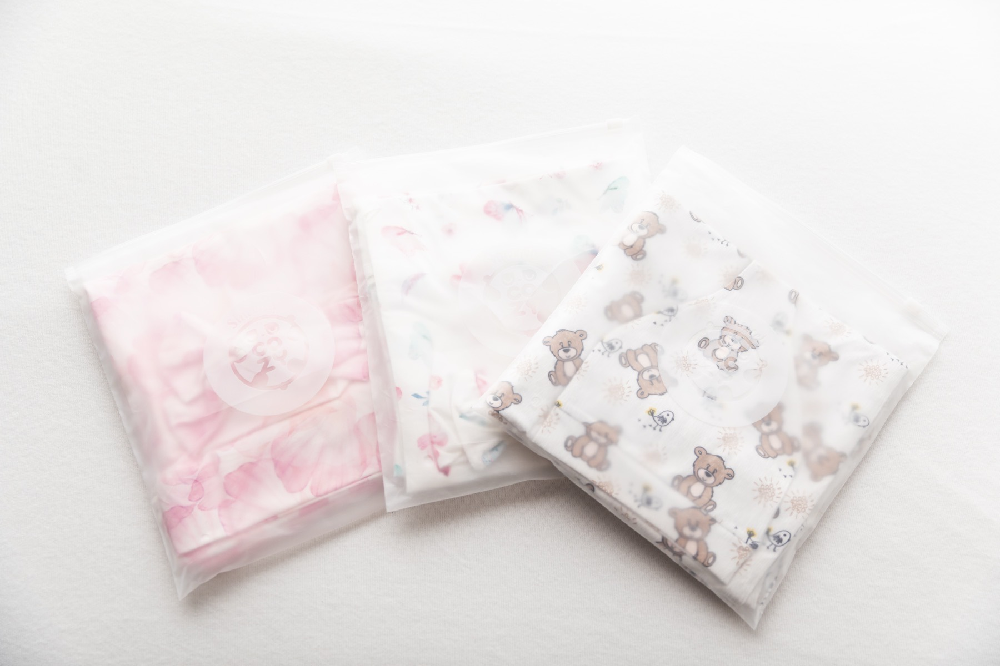

37|
37|
38|
43| Sleep Foundations
39|The Benefits of Swaddling Your Baby
40|What swaddling helps with, when it works best, and how to pair it with safe sleep basics.
41| Read Article 42|The Cozy Journal
30|Short, practical reads based on pediatric safe-sleep guidance and real parent routines.
32|
37| Sleep Foundations
39|What swaddling helps with, when it works best, and how to pair it with safe sleep basics.
41| Read Article 42| 46|
46| Fabric Education
48|A parent-friendly breakdown of comfort, breathability, durability, and care.
50| Read Article 51|
55|Milestones
57|Simple transition methods for the rolling stage and ways to keep using your swaddle.
59| Read Article 60|